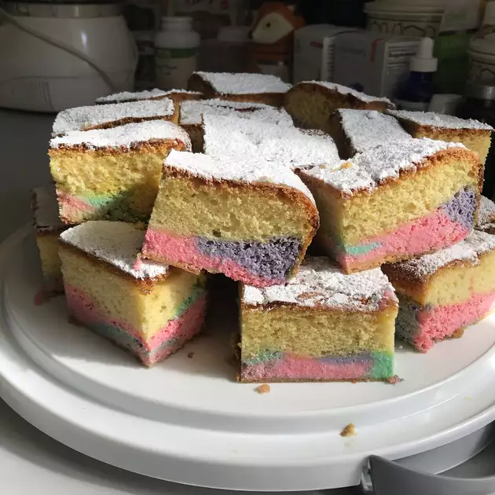

Bread

Ingredients
- 1 package yellow cake mix
- 2 pounds ricotta cheese
- 3/4 cup white sugar
- 4 eggs
- 1 teaspoon vanilla extract
Steps
- Preheat oven to 350 degrees F (175 degrees C). Grease and flour a 9x13 inch pan. Prepare the cake according to the directions on the package.
- In a medium bowl, combine ricotta, sugar, eggs and vanilla. Mix until smooth. Drop by spoonfuls on top of uncooked cake.
- Bake at 350 degrees F (175 degrees C) for 1 1/2 hours, or until a toothpick inserted into the cake comes out clean. Sprinkle cooled cake with confectioners sugar. Keep refrigerated.